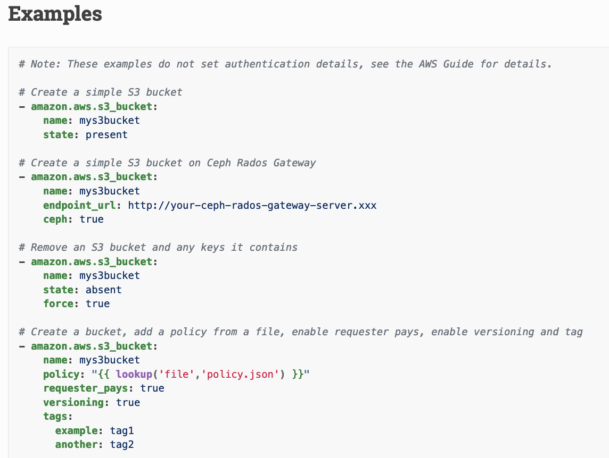

Partie 3 : Automatisation avec Ansible et AWS
Objectifs
Dans cette partie, vous allez :
- Découvrir comment Ansible peut être utilisé pour gérer des ressources AWS.
- Apprendre à configurer Ansible pour AWS avec un rôle IAM.
- Créer et gérer des ressources AWS, notamment des instances EC2 et des buckets S3.
3.1 Introduction aux Modules AWS dans Ansible
Ansible propose des modules spécifiques pour gérer les services AWS, permettant de créer et de configurer des ressources comme EC2, S3, RDS, et ELB de manière automatisée.
Présentation des modules AWS
- ec2 : Pour lancer, arrêter et gérer des instances EC2.
- aws_s3 : Pour créer et gérer des buckets S3, ainsi que pour uploader ou télécharger des fichiers.
- rds : Pour provisionner et configurer des bases de données RDS.
- elb : Pour créer et gérer des load balancers dans AWS.
Voir aussi le guide aws d'ansible et la liste complète des modules aws
Configuration d'Ansible pour AWS avec un Rôle IAM
Pour que Ansible puisse interagir avec AWS, configurez-le pour utiliser un rôle IAM attaché à l’instance de gestion. Ce rôle doit avoir les permissions nécessaires pour accéder aux services AWS (EC2, S3, etc.).
-
Créer un rôle IAM avec des permissions AWS :
- Dans la console IAM, créez un rôle avec les permissions nécessaires pour EC2 et S3.
- Associez ce rôle à l'instance de gestion Ansible.
-
Configurer les informations d’identification dans Ansible :
- Ansible utilisera le rôle IAM de l’instance de gestion pour accéder aux services AWS. Aucune clé d'accès n'est nécessaire dans le fichier de configuration.
Exercice : Configurer Ansible pour AWS en utilisant un rôle IAM sur une instance de gestion
- Objectif : Configurer Ansible pour gérer les ressources AWS depuis une instance EC2 avec un rôle IAM attaché.
- Étapes :
- Créez un rôle IAM avec des permissions de gestion pour EC2 et S3.
- Associez ce rôle à l'instance de gestion Ansible.
- Vérifiez l'accès en exécutant une commande Ansible pour interagir avec AWS.
3.2 Provisionner des Instances EC2
Le module ec2 dans Ansible permet de créer, configurer et gérer des instances EC2. Cela facilite le provisionnement d’infrastructures dynamiques en automatisant le lancement d’instances, la gestion de la configuration réseau, et bien plus encore.
Utilisation du module ec2 pour lancer et arrêter des instances
- Paramètres clés :
instance_type: Type d'instance à lancer (ex. :t2.micro).ami: Identifiant de l’image AMI à utiliser.key_name: Clé SSH pour l’accès à l’instance.security_groups: Groupes de sécurité associés à l’instance.
Exemple de playbook pour lancer une instance EC2 :
- name: Lancer une instance EC2
hosts: localhost
gather_facts: false
tasks:
- name: Lancer une instance EC2
ec2:
key_name: "my-key"
instance_type: "t2.micro"
image: "ami-0abcdef1234567890"
wait: yes
region: "us-west-2"
security_group: "my-security-group"
count: 1
register: ec2_info
- name: Afficher l'IP publique de l'instance
debug:
msg: "Instance IP: {{ ec2_info.instances[0].public_ip }}"
Exercice : Écrire un playbook pour lancer une instance EC2 et y appliquer une configuration de base
Objectif : Créer un playbook pour lancer une instance EC2 et configurer un service de base (comme Apache).
Étapes :
- Créez un playbook nommé
launch_ec2.yml. - Utilisez le module
ec2pour lancer une instance EC2. - Ajoutez des tâches pour installer Apache et démarrer le service sur l’instance.
3.3 Gestion du Stockage avec S3
S3 est un service de stockage d'objets dans AWS, utile pour conserver des artefacts de builds, des logs, ou des fichiers de configuration. Le module aws_s3 permet de créer et gérer des buckets S3, ainsi que d'uploader ou de télécharger des fichiers.
Utilisation du module aws_s3 pour gérer le stockage des artefacts et des logs
- Tâches courantes :
- Création de buckets : Créer des espaces de stockage pour organiser les artefacts et les logs.
- Upload et gestion des fichiers : Transférer des fichiers dans des buckets pour les rendre disponibles ou archivés.
- Configuration des permissions : Définir les permissions d'accès aux fichiers et aux buckets.
Exemple de playbook pour créer un bucket S3 et y uploader un fichier :
- name: Gestion d'un bucket S3
hosts: localhost
gather_facts: false
tasks:
- name: Créer un bucket S3
aws_s3:
bucket: "my-ansible-bucket"
mode: create
region: "us-west-2"
- name: Uploader un fichier dans le bucket S3
aws_s3:
bucket: "my-ansible-bucket"
object: "config/config.txt"
src: "/path/to/local/config.txt"
mode: put

Exercice : Créer un playbook pour créer un bucket S3 et y stocker des fichiers de configuration ou des artefacts
Objectif : Écrire un playbook pour créer un bucket S3 et y uploader un fichier de configuration ou un artefact.
Étapes :
- Créez un fichier
s3_storage.yml. - Utilisez le module
aws_s3pour créer un bucket S3. - Ajoutez une tâche pour uploader un fichier de configuration dans le bucket.
Liens vers la Documentation
- Documentation du module
ec2dans Ansible - Documentation du module
aws_s3 - Configuration d’Ansible avec AWS
Questions de Révision
Questions de Révision
Quel module Ansible permet de lancer et de gérer des instances EC2 ?
Solution
Le module `ec2` permet de lancer, arrêter et gérer des instances EC2.Quelles permissions IAM sont nécessaires pour qu'Ansible gère les ressources AWS ?
Solution
Les permissions nécessaires dépendent des services utilisés, comme `ec2:RunInstances` pour EC2 et `s3:PutObject` pour S3, configurées dans un rôle IAM.Comment Ansible interagit-il avec S3 pour gérer les artefacts ?
Solution
Ansible utilise le module `aws_s3` pour créer des buckets, uploader des fichiers, et gérer les permissions de manière automatisée.Conseils Pratiques
- Utilisez des noms uniques pour les buckets S3 : Les noms de buckets doivent être uniques globalement.
- Configurez le rôle IAM avec le principe de moindre privilège : Assurez-vous que le rôle IAM de l’instance de gestion a uniquement les permissions nécessaires pour éviter les risques de sécurité.
- Testez les modules AWS en mode débogage : Utilisez l'option
check_modepour tester les modifications sans les appliquer réellement. Plus de détails sur la configuration AWS
Défi Intermédiaire
Défi Intermédiaire
**Objectif** : Automatiser la gestion d'une infrastructure AWS incluant le provisionnement d'instances EC2 et la gestion des artefacts dans S3.
Contexte : Vous devez créer un playbook Ansible pour lancer une instance EC2, configurer le serveur avec un fichier de configuration spécifique, et sauvegarder ce fichier dans un bucket S3.
Étapes principales
1. Créez un playbook nommé `aws_infra.yml`. 2. Utilisez le module `ec2` pour lancer une instance EC2. 3. Configurez le serveur avec un fichier de configuration. 4. Uploadez le fichier de configuration dans un bucket S3.Compétences renforcées :
- Provisionnement d'instances EC2
- Gestion de fichiers dans S3
Solution suggérée
Utilisez un playbook semblable à ceci :- name: Gestion de l'infrastructure AWS
hosts: localhost
gather_facts: false
tasks:
- name: Lancer une instance EC2
ec2:
key_name: "my-key"
instance_type: "t2.micro"
image: "ami-0abcdef1234567890"
wait: yes
region: "us-west-2"
security_group: "my-security-group"
register: ec2_info
- name: Uploader le fichier de configuration dans S3
aws_s3:
bucket: "my-ansible-bucket"
object: "config/config.txt"
src: "/path/to/local/config.txt"
mode: put